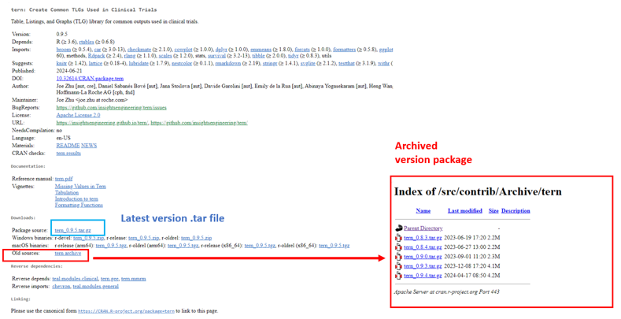

Overview
This vignette demonstrates how to use a set of R functions to programmatically retrieve the URL and code host package hosted on CRAN, Bioconductor and Github.
We will walk through each step, from checking if a package exists on CRAN to fetching its version history and constructing an appropriate download URL.
CRAN
Check if the Package Exists on CRAN
risk.assessr:::check_cran_package("here")Parse Package Archive HTML from CRAN database
fetch information from “https://cran.r-project.org/src/contrib/Archive/here/”
html <- risk.assessr:::parse_package_info("here")
html
Extract Version Information from the Archive Page
Create table with package_name,
package_version, link, date,
size from CRAN website
Get All Versions and the Latest Version
version_info <- risk.assessr:::get_versions(table, "here")
version_info$last_versionGet CRAN package URL source code
url <- risk.assessr:::get_cran_package_url(
package_name = "here",
version = NULL,
last_version = version_info$last_version,
all_versions = version_info$all_versions
)
urlInternal R package
risk.assessr can also provide similar information from
Internal mirror
result_intern <- risk.assessr:::get_internal_package_url("herald")
result_intern$url
result_intern$last_versionBioconductor package
Steps to get an R package stored on Bioconductor
html_content <- fetch_bioconductor_releases()
release_data <- parse_bioconductor_releases(html_content)
result_bio <- get_bioconductor_package_url("flowCore", "2.18.0", release_data)
result_bio$urlGithub repository
R packages stored on Github are assess by looking at BugReports or URL in DESCRIPTION file to find a owner. github link are then created such as below and used to request Github API.
urls <- c(
"https://github.com/tidyverse/ggplot2"
)
bug_reports <- c(
"https://github.com/tidyverse/ggplot2/issues"
)
all_links <- c(urls, bug_reports)
github_pattern <- "https://github.com/([^/]+)/([^/]+).*"
matching_links <- grep(github_pattern, all_links, value = TRUE)
owner_names <- sub(github_pattern, "\\1", matching_links)
package_names_github <- sub(github_pattern, "\\2", matching_links)
valid <- which(owner_names != "" & package_names_github != "")
if (length(valid) > 0) {
github_links <- unique(paste0("https://github.com/", owner_names[valid], "/", package_names_github[valid]))
} else {
github_links <- NULL
}
github_linksGet R package source code
tarball_path <- get_package_tarfile("dplyr", version = "1.0.0")